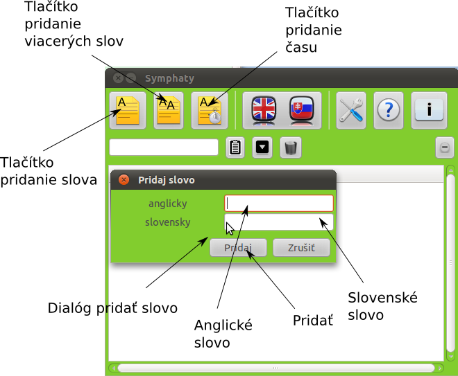

Pokročilejšie
V tejto sekcii sa oboznámime s pokročilejšími funkciami slovníka:
Pridávanie nového slova
Ak chceme pridať slovo, ktoré nie je v databáze tak klikneme na tlačítko
označené na obrázku Tlačítko pridanie slova. Objaví sa nám Dialóg pridať slovo.
Do poľa označeného na obrázku Anglické slovo napíšeme anglické slovo, ktoré chceme
pridať a do poľa Slovenské slovo, jeho slovenský význam. Ak sme slová napísali
stlačíme tlačítko Pridať. Zobrazí sa nám oznam o pridaní/nepridaní slova.

Pridávanie viacerých slov zo súboru
Ak chceme pridať viacero anglických slov do databázy alebo chceme pridať
nové významy k anglickému slovu, môžme postupovať takto: Vytvoríme si
textový súbor. Do textového súboru píšeme slová takto:
anglické slovo1:slovensky1:slovensky2
anglické slovo2:slovensky4:slovensky5
, súbor uložíme. V našom slovníku potom stlačíme tlačítko označené na obrázku Tlačítko pridanie viacerých slov. Otvorí sa nám dialóg, v ktorom si vyberieme práve uložený textový súbor a stlačíme tlačítko Otvoriť. Slovník začne pridávať slová, doba pridávania závisí od počtu pridávaných slov.
anglické slovo1:slovensky1:slovensky2
anglické slovo2:slovensky4:slovensky5
, súbor uložíme. V našom slovníku potom stlačíme tlačítko označené na obrázku Tlačítko pridanie viacerých slov. Otvorí sa nám dialóg, v ktorom si vyberieme práve uložený textový súbor a stlačíme tlačítko Otvoriť. Slovník začne pridávať slová, doba pridávania závisí od počtu pridávaných slov.
Pridávanie času
Okrem pridania slova a jeho významu môžme pridať aj anglické slovo
s jeho minulým a trpným tvarom, urobíme to takto. Stlačíme Tlačítko pridanie
času, otvorí sa nám dialóg, ktorý obsahuje pole pre prítomný čas slova,
minulý čas slova a trpný tvar slova. Polia vyplníme a stlačme tlačítko Pridať.